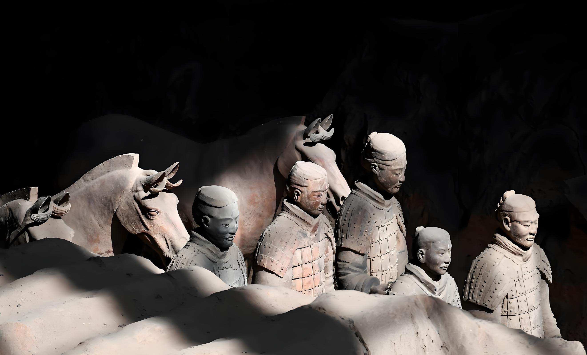
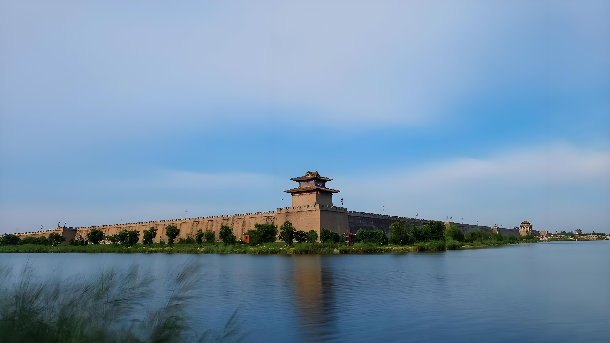

Discovered in 1974 by local farmers, the Terracotta Army is one of the greatest archaeological finds of the 20th century. This vast collection of over 8,000 life-sized clay soldiers, horses, and chariots was built to protect Emperor Qin Shi Huang in his afterlife.
Each figure is unique, with distinct facial features, hairstyles, and armor. The level of craftsmanship reveals the extraordinary artistic and technological achievements of the Qin Dynasty over 2,200 years ago.

Built during the Ming Dynasty (1370), Xi'an's City Wall is the most complete and best-preserved ancient city defense system in China. Stretching 13.7 kilometers, it stands 12 meters high and 15 meters wide at the top.
The wall features a deep moat, drawbridges, watchtowers, and corner towers. Today, visitors can walk or cycle along the top, enjoying panoramic views of both ancient and modern Xi'an.